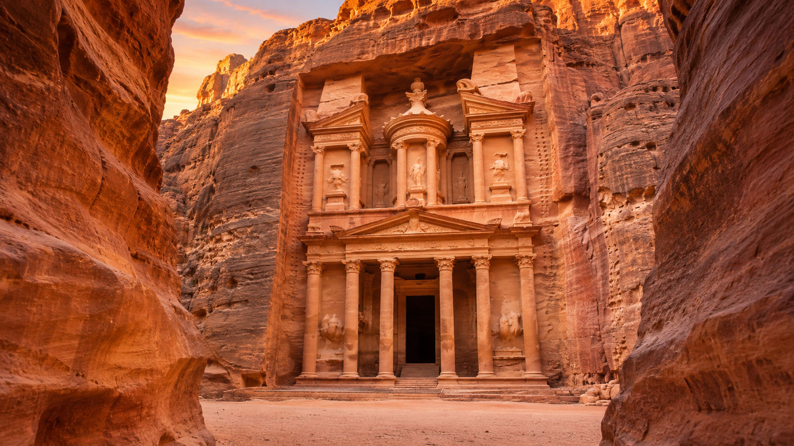
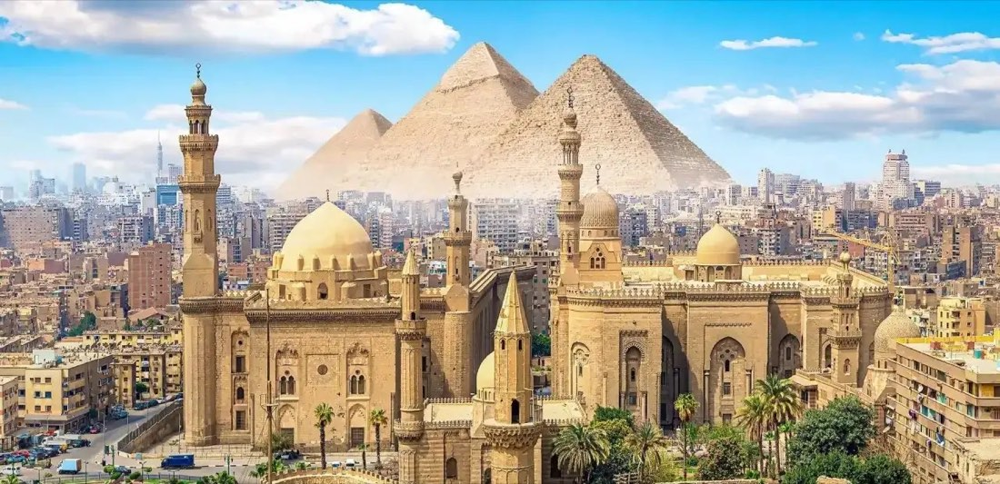

Saraybosna ve Mostar Gezi Rehberi: Bosna Hersek'te Görülecek Yerler
Başçarşı, Gazi Hüsrev Bey Camii, Mostar Köprüsü ve Blagay Tekkesi: Bosna Hersek turunda görülecek yerler ve gezi öncesi pratik notlar.
Devamını oku →

Kazablanka – Fas’ın Kalbi, Atlas’ın Beyaz Şehri Fas’ın modern yüzünü görmek isteyenlerin ilk durağı genellikle Kazablanka olur. Yerel halkın “Dar el-Beïda” olarak andığı bu şehir, sadece Fas’ın değil, tüm Kuzey Afrika’nın ekonomik kalbi sayılır. 4 milyona yaklaşan nüfusuyla hem kalabalık, hem canlı, hem de şaşırtıcı derecede kozmopolit bir şehir profili sunar.
Atlas Okyanusu’nun serin esintisiyle sarmalanan bu şehirde, bir yanda modern gökdelenler yükselirken, diğer yanda Fransız protektorası döneminden kalma kolonyal binalar sessizce zamana tanıklık eder. Şehrin adı İspanyolca “Casa Blanca” yani “Beyaz Ev” anlamına gelir. 18. yüzyılda bu kıyıya uğrayan İspanyol denizciler, şehrin beyaz badanalı evlerinden etkilenmiş olacak ki bu adı vermişler. Zamanla şehir sadece adını değil, çok kültürlü yapısını da taşıdığı limanlardan aldı. Bugün Kazablanka, Fas’ın finans merkezidir.
Bankaların genel merkezleri, uluslararası şirketlerin ofisleri, fuar alanları ve büyük kongre merkezleri burada yer alır. Ama şehir sadece iş dünyasıyla değil, aynı zamanda zengin mutfağı, hareketli kültür-sanat hayatı ve sahil boyunca uzanan lüks otelleriyle de büyüleyici bir çekim alanı oluşturur. Eğer Kazablanka’yı sadece transit geçilecek bir şehir sanıyorsanız, yanılıyorsunuz.
Burada durup derin bir nefes almak, Hassan II Camii’nin gölgesinde ruhunuzu dinlendirmek, şehrin sokaklarındaki Fransız esintisini hissetmek size çok şey kazandırır. Kazablanka’yı yerinde keşfetmek isteyenler için fastur.com.tr üzerinden düzenlenen turlar, hem rehberli gezi hem de konforlu ulaşım imkânı sunuyor. Yani bu modern masalın içine güvenle adım atmak çok kolay.
“Kazablanka sadece bir şehir değil, aynı anda hem geçmişi hem geleceği fısıldayan bir kıyı şehri… Beyaz gibi sade ama içine baktığında dopdolu.” Tarihçe – Kazablanka’nın Küllerinden Doğuşu Kazablanka’nın geçmişi, sadece Fas’ın değil, Akdeniz’in ve Atlantik’in kadim tarihiyle iç içe örülmüştür. Şehrin temelleri, Antik Roma dönemine kadar uzanır. O zamanlar ismi Anfa olan bu yerleşim, Berberi halkın yaşadığı bir liman kenti olarak dikkat çekerdi.
8. yüzyılda bölge Müslüman fatihlerin gelişiyle İslam’la tanıştı ve kısa sürede stratejik önem kazandı. Ne var ki, 15. yüzyıla gelindiğinde Anfa’nın kaderi değişti. Portekizli korsanlar bu hareketli limanı işgal edip yerle bir etti. Anfa, bir süre harabeler hâlinde kaldı. Ancak 18. yüzyılda Fas Sultanı Sidi Mohammed Ben Abdallah, bu kıyı şehrine yeniden hayat verdi. İşte o dönemde “Dar el-Beïda” yani “Beyaz Ev” ismi resmiyet kazandı; zamanla bu isim “Casa Blanca” olarak söylenegelmişti.
Modernleşme yolculuğu ise 20. yüzyılın başlarında başladı. 1907’de Fransızlar Kazablanka’ya asker çıkardı; 1912’de Fas’ın Fransız protektorası altına girmesiyle birlikte şehir, Fransız mimar ve mühendislerce planlı biçimde yeniden inşa edildi. Geniş bulvarlar, düzenli mahalleler, kolonyal tarzda yapılar ve tramvay hatları bu dönemin eseridir.
Ve tabii ki unutulmaz bir sinema sahnesi: 1942 yılında vizyona giren “Casablanca” filmi… Humphrey Bogart ve Ingrid Bergman’ın ölümsüzleştirdiği bu yapım, şehrin adını tüm dünyaya duyurdu. Film, gerçi burada çekilmemiş olsa da, Kazablanka’nın romantik, gizemli ve savaş gölgeleri altındaki atmosferi hafızalara kazındı. Tüm bu tarihî katmanları yerinde görmek isterseniz, fastur.com’un hazırladığı Kazablanka turlarıyla hem şehir merkezini hem de bu geçmişin izlerini deneyimleme fırsatı bulabilirsiniz.
Rehberli anlatımlar ve yerinde keşifler sayesinde, tarihin sadece kitaplarda kalmadığını hissedeceksiniz. “Kazablanka, küllerinden doğmuş bir şehir. Geçmişiyle barışık, geleceğe meydan okuyan bir liman gibi...” Hassan II Camii – İnancın ve Mimarinin Zirvesi Kazablanka’nın kalbinde, Atlas Okyanusu’na nazır yükselen Hassan II Camii, sadece Fas’ın değil tüm İslam coğrafyasının gurur duyduğu bir şaheser. 1993 yılında tamamlanan bu ihtişamlı yapı, Kral II.
Hasan’ın "Tanrı’nın tahtı su üzerindedir" ayetine atıfla okyanusun üzerine inşa edilmesini istemesiyle doğdu. Böylece sadece bir cami değil, aynı zamanda inançla mühendisliğin birleştiği bir anıt ortaya çıktı. İnşaat süreci tam 13 yıl sürdü. 1980’de başlayan çalışmalarda yaklaşık 10.000 işçi ve 6.000 Faslı zanaatkâr görev aldı. Her biri geleneksel el sanatlarında usta olan bu kişiler, camideki mozaiklerden oymalı ahşaplara, sıvalardan mermer süslemelere kadar her detayı el işçiliğiyle hazırladı.
Öyle ki burada kullanılan zellij mozaikleri, sedir ağacından oyma tavan süslemeleri, ve mermer döşemeleri Fas’ın farklı bölgelerinden özel olarak getirildi. Caminin devasa minaresi 210 metre yüksekliğinde olup, bu özelliğiyle dünyanın en yüksek minaresidir. Gece olduğunda minarenin tepesinden okyanusa doğru bir lazer ışık huzmesi uzanır – kıble yönünü gösteren bu ışık 30 kilometre öteden görülebilir. İç mekân büyüklüğüyle de göz kamaştırır.
25.000 kişi içeride, 80.000 kişi ise avluda olmak üzere toplamda 105.000 kişilik kapasitesiyle, camii aynı zamanda bir açık hava ibadethanesidir. Açılır kapanır tavan sistemi, teknolojiyle geleneksel yapıyı ustaca buluşturur. Mermer sütunlar, zümrüt yeşili halılar, ve 50 tonluk devasa avizeler içeriye sadece nur değil, sanatsal bir ambiyans da yayar. Bu devasa yapının toplam maliyeti yaklaşık 600 milyon dolar olarak kayıtlara geçmiştir.
Ancak Fas halkı bu caminin inşası için gönüllü bağış kampanyalarıyla ciddi katkı sağlamış, adeta inançlarını taşla, mozaikle ve dualarla örmüşlerdir. Ziyarete açık olan Hassan II Camii, Müslüman ve gayrimüslim turistlerin ilgisini çeker. Özellikle rehberli turlarda yapının detaylarına dair bilgi almak mümkündür. İşte tam bu noktada fastur.com farkı devreye girer. Kazablanka turları kapsamında düzenlenen camii gezileri, ziyaretçileri sadece bir mimari yapı değil, aynı zamanda bir inanç yolculuğuyla buluşturur.
“Bu camide zamanın nabzı dua ritmiyle atar. Taşları sadece ustalar değil, adanmışlık döşemiştir.” Habous Mahallesi – Gelenekle Modernliğin Zarif Buluşması Kazablanka'nın telaşlı ritminden birkaç adım uzaklaştığınızda sizi başka bir zamana taşıyan bir mahalleye çıkarsınız: Habous Mahallesi, ya da yerel halkın söylediği gibi "Yeni Medine". 1930'lu yıllarda Fransız sömürgesi döneminde inşa edilen bu semt, geleneksel Fas mimarisiyle Avrupai şehir planlamasını ustaca harmanlamış bir yerleşimdir.
Burada yürümek, sanki geçmişle bugünün iç içe geçtiği bir film sahnesinde dolaşmak gibidir. Daracık sokaklar, kemerli geçitler, iç avlulu hanlar ve zamanın durduğu hissi veren çarşılar… Ama asfalt yollar, düzgün sıralanmış dükkanlar ve düzenli sokak yapısı sizi yine modern şehir hayatına bağlar. Habous, zanaatkârların hünerlerini sergilediği onlarca dükkânla doludur.
El yapımı seramikler, bakır işlemeler, Arap hat sanatıyla bezenmiş deri kaplı defterler… Özellikle geleneksel Fas kaftanları ve argan yağı ürünleri alışveriş yapmak isteyen turistler için adeta bir hazine mahzeni gibidir. Liman bölgesine yakınlığı da bu çarşıyı hem yerel halk hem de denizden gelen ziyaretçiler için vazgeçilmez kılar. Ayrıca burada bulunan kitapçılar ve sahaflar, Fas’ın entelektüel damarına dokunmak isteyenler için küçük ama derin bir kapı aralar.
Mis gibi taze pişmiş çörek kokuları arasında dolaşırken, bir köşede tatlı tatlı kaynayan nane çayını içen yaşlı bir esnafla sohbet edebilirsiniz. İşte bu sıcaklık, Habous'u özel kılar. fastur.com.tr tarafından düzenlenen Kazablanka kültür turları kapsamında Habous Mahallesi mutlaka yer alır. Çünkü burası yalnızca bir turistik durak değil, aynı zamanda yerel yaşamın içtenliğini ve Fas’ın ruhunu yansıtan bir mahalledir. Rehber eşliğinde yapılan yürüyüşlerde, sadece göz değil gönül de doyar.
“Bir dükkândan minyatür bir mescit alırsın, ama içinde bin yıllık dua yankılanır…” Kazablanka’da Sahil Kültürü ve Kolonyal Mirasın Buluştuğu Yer: Corniche Bölgesi Kazablanka denince akla önce Hassan II Camii, sonra ise okyanusun kıyısında uzanan Corniche sahil şeridi gelir. Burası şehrin modern yüzünü temsil ederken, aynı zamanda geçmişin kolonyal izlerini de taşır. Atlantik’in serin esintisiyle yürümek, gün batımında okyanusun kızıllığına karşı çay yudumlamak ya da dalgaların kıyıya vurduğu melodiyi dinlemek...
Corniche, tüm bunları aynı anda yaşatan eşsiz bir sahil bölgesidir. Ain Diab Plajı, hem yerel halkın hem de turistlerin favorisi. Gündüzleri deniz keyfi, akşamları ise şık kafelerde müzik eşliğinde vakit geçirme fırsatı sunar. Özellikle yaz aylarında burası adeta bir yaşam alanına dönüşür. Geniş kaldırımları, okyanusa nazır restoranları ve yürüyüş parkurlarıyla Kazablanka’nın nefes alma noktasıdır.
Corniche boyunca ilerlerken, Fransız kolonyal dönemine ait art deco yapılar, İtalyan esintili oteller ve beyaz badanalı malikâneler karşınıza çıkar. 1920’li ve 30’lu yıllarda inşa edilen bu yapılar, şehre Avrupai ama yerel dokunuşlarla bezenmiş zarif bir kimlik kazandırmıştır. Bazen bir balkon korkuluğunda, bazen de vitraylı bir pencerede bu mimarinin detaylarını yakalamak mümkündür. Corniche, aynı zamanda Kazablanka gece hayatının da kalbidir.
Deniz manzaralı restoranlarda Fas mutfağının lezzetlerini tadabilir, okyanusa karşı taze ızgara balıklarla ziyafeti taçlandırabilirsiniz. İşte bu nedenle fastur.com.tr olarak hazırladığımız Kazablanka programlarında, Corniche’de serbest zaman ya da rehberli yürüyüşler mutlaka bulunur. Sahilin modernliği ile şehrin tarihî ruhunu aynı karede yakalayabilmek, fotoğrafçılar için de tam bir fırsattır. “Bir yanda okyanus, bir yanda geçmiş...
Kazablanka sahilinde yürürken ruhun da yola çıkar.” Kazablanka’da Sanat, Tiyatro ve Kültürel Etkinlikler Kazablanka sadece iş dünyasının değil, Fas’ın kültürel kalbinin de attığı yerlerden biridir. Şehir, sahip olduğu enerjiyi yalnızca okyanustan değil; sanatçılarından, tiyatrolarından ve sokaklara taşan ruhani ritminden de alır. Birçok kişi Kazablanka’yı gri gökdelenleri ve limanıyla tanır ama biraz dikkatli bakıldığında, şehrin her köşesinde sanatın izleri görülür.
Şehrin en önemli kültürel merkezlerinden biri, Théâtre Mohammed V’dir. Hem klasik tiyatro oyunları hem de çağdaş performanslar burada sahne alır. Faslı tiyatrocuların yanı sıra, Fransa’dan, İspanya’dan gelen turne grupları da bu sahnede izleyiciyle buluşur. Sanatseverler için Kazablanka’da bir akşam, Fransızca bir oyunla entelektüel bir ziyafete dönüşebilir. Modern sanatın merkezi ise Villa des Arts.
Kolonyal dönemden kalma zarif bir binada yer alan bu sanat galerisi, çağdaş Faslı sanatçıların eserlerine ev sahipliği yapar. Ziyaretçiler, burada yerel estetikle evrensel akımların nasıl buluştuğuna tanık olabilir. Resim, heykel, dijital sanat ve zaman zaman şiir okumaları ile zengin bir kültür menüsü sunar. Ayrıca yıl boyunca düzenlenen Kazablanka Uluslararası Tiyatro Festivali, Jazzablanca Müzik Festivali ve bağımsız sinema gösterimleri gibi etkinlikler, şehrin kültürel dinamizmini perçinler.
Özellikle yaz aylarında sokaklar açık hava performanslarına, sergilere ve müzikli buluşmalara sahne olur. fastur.com.tr olarak hazırladığımız kültür turlarında bu tür etkinliklere denk gelen gezginlerimizi mutlaka bilgilendiriyor, dileyenlere özel rezervasyon desteği sunuyoruz. Böylece klasik bir şehir turunun ötesinde, bir sanat şehrinde yolculuk yapmış oluyorsunuz. “Bir şehirde sahneler susmuyorsa, sokaklar da hayal kurar...
Kazablanka işte o şehir.” Kazablanka’da Sokak Lezzetleri ve Yerel Pazarlar – Bir Tadım Yolculuğu Kazablanka’yı gezmek sadece tarihi yapıları görmekle olmaz; şehrin ruhu sokaklarında yenir, koklanır, tadılır. Hele ki yemekle arası iyi olanlar için bu şehir, adeta açık hava mutfağı gibidir. Sabahın erken saatlerinde açılan pazarlar, öğlene doğru yerel halkla dolup taşarken, sokak aralarında yükselen kızgın yağ kokusu ve taze nane esintisi sizi burnunuzdan yakalar.
İlk durağımız Derb Ghallef ya da Maarif Pazarı olabilir. Buralarda sadece sebze meyve değil, aynı zamanda geleneksel atıştırmalıklar da satılır. Taze pişmiş msmen (ince katmer), naneli atay (çay) ile birleşince sabah kahvaltısı adeta törensel bir ritüele dönüşür. Ara sokaklarda satılan bissara (bakla çorbası), üzerine zeytinyağı ve kimyonla servis edilir; yoksul yemeğidir ama yediğinizde içinizi zenginleştirir. Zitoune pazarı, baharatçılar, kuruyemişçiler, zeytin satıcıları ve balıkçılarla doludur.
Turistlerin ilgisini çeken bu pazar aynı zamanda yerel halkın gerçek alışveriş noktasıdır. Fas mutfağının temeli olan ras el hanout baharatı, burada çeşit çeşit satılır. Her satıcının kendi gizli karışımı vardır; bu da her tajin’in neden farklı tatta olduğunu açıklar. Akşam saatlerinde ise Corniche kıyılarında ya da medina çevresinde kurulan tezgâhlarda kızarmış balık ekmek, acılı soslu merguez sosisleri ve sıcacık harira çorbası servis edilir.
Eline alır, yürüyerek yersin, çünkü Kazablanka’da yemek sadece mideye değil şehre ayak uydurmanın da bir yoludur. fastur.com.tr ile düzenlenen Kazablanka gezilerimizde, rehberlerimiz bu gizli tat noktalarını size göstermek için her zaman hazır. Çünkü bizce şehirler önce damağa, sonra akla kazınır. “Fas’ta bir çorba içmek bazen bir dua okumak gibidir...
Lezzet de hikmet de aynı kapta kaynar.” Kazablanka’dan Ne Alınır? – Anılarla Dolu Bavullar İçin Alışveriş Rehberi Kazablanka’dan dönerken yalnızca fotoğraf değil, kültür, tat ve dokunuş taşıyan hediyelerle dönmek isterseniz doğru şehirde olduğunuzu bilin. Burası alışverişin hem otantik hem de modern yönünü birleştiren bir cazibe merkezi. Sokak tezgâhlarında pazarlıkla başlayan alışveriş, modern AVM’lerde şık poşetlerle biter. Ama esas kıymetli olan, her eşyanın bir hikâyeyi içinde saklıyor olmasıdır.
Şehrin kalbinde yer alan Habous Mahallesi, geleneksel Fas ürünlerinin adeta açık hava müzesidir. Burada el yapımı zellij (mozaik) kaseler, bakır işlemeli tepsiler, deri defterler ve kokusu yıllarca gitmeyen argan yağları bulabilirsiniz. Özellikle el dokuması berber kilimleri, evine Fas rüzgârı taşımak isteyenler için biçilmiş kaftandır. Kazablanka’nın çarşılarında mutlaka karşınıza çıkacak olan ürünlerden biri de babouche adı verilen geleneksel Fas terlikleridir.
Yumuşak deriden elde yapılan bu terlikler hem konforlu hem de şıktır. Renk renk, desen desen çeşitleriyle seçmesi zor, giymesi zevklidir. Baharat meraklıları için ras el hanout, kurutulmuş limon, safran, zencefil, tarçın gibi ürünler, hem yemeklere lezzet katar hem de mutfağa Fas’ın ruhunu taşır. Yanına biraz da naneli yeşil çay alırsan, Fas sofraları evine kadar gelir. Modern alışveriş için ise Morocco Mall gibi dev AVM’ler tercih edilebilir.
Burada hem Fas markalarının hem de uluslararası markaların ürünleri bulunur. Ancak bizim tavsiyemiz, fastur.com.tr aracılığıyla katıldığınız turlarda yerel rehberlerin önerdiği butik dükkânlara uğramanız. Çünkü hediyelik eşyanın aslı, o tezgâhın ardındaki ustanın hikâyesinde saklıdır. “Fas’tan aldığınız her parça biraz renk, biraz baharat, biraz da dua taşır.
Yeter ki kalpten seçin…” Kazablanka'da Gece Hayatı ve Sosyal Yaşam – Geceleri Parlayan Atlas Şehri Kazablanka gündüzleri kozmopolit bir ticaret merkezi, akşamları ise hem yerlilerin hem de gezginlerin kendine vakit ayırdığı sosyal bir sahneye dönüşür. Fas’ın genel yapısında muhafazakâr bir damar bulunsa da Kazablanka, diğer şehirlerden ayrılır; çünkü burası alışkanlıklarla yeniliğin, gelenekle özgürlüğün dengede olduğu nadir şehirlerden biridir. Şehrin gece hayatı denince akla ilk gelen yer Aïn Diab Corniche olur.
Gündüzleri okyanusa karşı yürüyüş yapılan bu sahil hattı, gece olduğunda restoranlar, lounge barlar ve kafelerle canlanır. Özellikle okyanus manzaralı roof barlar, hafif caz eşliğinde şehre tepeden bakmak isteyenler için eşsizdir. Kimi yerlerde ise geleneksel Fas müziğiyle yerel ritimlere kulak verirken, kimi zaman da DJ performansları ile daha modern bir gece deneyimi yaşarsınız. Place des Nations Unies çevresi ve Maarif semti, gençlerin ve sosyalleşmeyi sevenlerin uğrak noktasıdır.
Nargile kafeler, kitap kafeler, açık hava sinemaları ve kültürel buluşmalar bu bölgede yoğunlaşır. Kazablanka’da sosyal yaşam sadece gece kulüplerinden ibaret değildir; kültürel etkinlikler ve sohbet köşeleri de şehre renk katar. fastur.com.tr olarak Kazablanka turlarımızda, güvenli ve kültürel zenginlik sunan gece programlarını öneriyor; misafirlerimizin ilgi alanlarına göre akşam alternatifleri sunuyoruz. Çünkü bir şehir, sadece gündüzüyle değil, geceye nasıl baktığıyla da tanınır.
Kazablanka, akşamları da çok gürültüye gerek duymadan sosyalleşmek isteyen gezginler için idealdir. Hafif müzik, hafif bir yemek ve okyanusun sesi eşliğinde geçirilen bir gece, çoğu zaman sabaha bir tebessümle uyanmak için yeterlidir. “Bazı şehirler sabah güneşinde değil, gece lambalarında kendini anlatır. Kazablanka onlardan biri...” Rick’s Café – Kazablanka Filminin Gölgesinde Gerçek Bir Efsane Kazablanka denince akla gelen ilk şeylerden biri, hiç şüphesiz 1942 yapımı "Kazablanka" filmidir.
Humphrey Bogart ve Ingrid Bergman’ın ölümsüz aşkına ev sahipliği yapan Rick’s Café, aslında filmdeki kurgu bir mekândı. Ancak yıllar sonra bu efsane gerçek oldu. Bugün Kazablanka'nın eski medina kapısına yakın, okyanusa nazır konumda yer alan bu şık ve romantik mekân, adeta filmin ruhunu yaşatmak için tasarlanmış. Rick’s Café, sadece bir restoran değil, zamanın yavaşladığı ve nostaljinin her köşeye sindiği bir deneyim alanıdır.
Fransız ve Fas mimarisinin zarif birleşimi, ahşap detaylı mobilyalar, siyah beyaz fotoğraflar, Art Deco avizeler ve piyanonun kulağa fısıldadığı caz melodileri… Her şey, sanki o sahnede siz de varmışsınız gibi hissettirir. Özellikle akşam saatlerinde çalan “As Time Goes By”, mekâna gelen herkesi geçmişle bugünün arasında bir yere bırakır. Mutfakta ise klasik Fas lezzetleri ile Fransız dokunuşları bir araya gelir: tajinler, deniz ürünleri, kaz ciğeri terinleri ve yerel tatlılar damakta iz bırakır.
Bu mekân sadece turistlerin değil, romantik bir akşam geçirmek isteyen Faslı çiftlerin de favorileri arasında yer alır. fastur.com.tr ile düzenlenen Kazablanka turlarında Rick’s Café, özel öneriler listemizde mutlaka yer alır. Dileyen misafirlerimiz için ön rezervasyon da sağlıyoruz çünkü özellikle hafta sonları yer bulmak kolay değildir. Bazı yerler vardır ki, sadece yemek yemek için değil, anı yaşamak için gidilir. İşte Rick’s tam da öyle bir yer.
“Burası bir restoran değil… Bir film sahnesine oturur gibi hissediyorsun. Kalbin usulca perdeyi kapatıyor…” Central Market – Kazablanka’nın Kalbindeki Renkli Pazar Dünyası Kazablanka’nın tam merkezinde, Mohammed V Bulvarı üzerinde konumlanan Central Market, şehrin belki de en canlı, en kokulu ve en renkli yeridir. Hem yerlilerin hem de turistlerin sıklıkla uğradığı bu pazar, günlük yaşamın içinden geçen bir keşif rotası sunar.
Sabaha karşı açılan tezgâhlarda denizden yeni çıkmış balıklar, rengârenk meyve ve sebzeler, baharat dağları, taze çiçekler ve geleneksel ürünler bir arada sunulur. Marché Central, 20. yüzyıl başında Fransızlar tarafından inşa edilmiş ve kolonyal tarzda yapılmış zarif kemerli mimarisiyle dikkat çeker. İçeriye adım attığınız anda Fas’ın gündelik hayatına dair gerçek bir kesit görürsünüz.
Balıkçıların yüksek sesle müşteri çekişleri, tezgâh aralarında dolaşan kediler, yaşlı hanımların baharat tartışıları, her şey samimi ve gerçek. Burası sadece alışveriş yapmak için değil, aynı zamanda bir yaşam deneyimi için uğranan bir yerdir. Taze deniz ürünlerini seçip hemen oradaki küçük restoranlarda pişirtmek mümkündür.
Özellikle ızgara kalamar, sarımsaklı karides ve taze sardalya, yerel halkın olduğu kadar turistlerin de favorisi. fastur.com.tr olarak önerdiğimiz özel şehir içi yürüyüş rotalarında Central Market mutlaka yer alır. Çünkü bu pazar sadece bir alışveriş noktası değil, Kazablanka’nın nabzının attığı yerlerden biridir. Dilerseniz rehber eşliğinde dolaşırken geleneksel tatları deneyimleyebilir, alışveriş tüyoları alabilir ve yerel halkla birebir etkileşim kurabilirsiniz.
“Burası Fas’ın kalbini avucuna koyduğun bir yer… Alışveriş değil, hatıra topluyorsun burada.” Twin Center ve Sky 28 Bar – Kazablanka’nın Göğe Uzanan Yüzü Kazablanka'nın geleneksel ruhunu yaşadıktan sonra, şehrin modern siluetine bakmak isterseniz rotanızı mutlaka Twin Center kulelerine çevirin. Maarif semtinin göbeğinde yükselen bu ikiz kuleler, şehrin çağdaş yüzünün ve ekonomik dinamizminin adeta birer sembolüdür.
Her biri 28 katlı olan bu kuleler, lüks ofisler, alışveriş merkezi, otel ve restoranlara ev sahipliği yapar. Kazablanka'nın göğe açılan kapısı gibidir bu yapılar. Ancak bu kompleksin en etkileyici bölümü hiç kuşkusuz Sky 28 Bar. Adından da anlaşılacağı gibi binanın 28. katında yer alan bu zarif mekan, şehrin 360 derece panoramik manzarasını sunar. Özellikle gün batımında Atlas Okyanusu’nun ufukla buluştuğu anları buradan izlemek, Kazablanka’da nadir yaşayabileceğiniz bir deneyimdir.
Sky 28 sadece manzarasıyla değil, ambiyansı ve mutfağıyla da öne çıkar. Şık kokteyller, hafif atıştırmalıklar ve güncel müzik eşliğinde sunulan keyifli bir atmosferde; hem iş insanları hem gezginler buluşur. Fas’ın geleneksel çayını burada yudumlamak bile başka bir anlama bürünür. Özellikle akşam saatlerinde canlı caz dinletileriyle geceye zarif bir dokunuş yapılır. fastur.com.tr olarak Kazablanka’daki turlarımızda, klasik tarih ve kültür rotalarına ek olarak bu tür modern duraklara da yer veriyoruz.
Çünkü Fas, sadece geçmişiyle değil, bugünüyle de büyüleyici. Twin Center ve Sky 28 gibi yerler, bu dengeyi anlamak ve yaşamak için birebir. “Bazı şehirleri sokaklarında değil, göğe bakan camlarında tanırsın. Sky 28 işte tam öyle bir pencere…”
Başçarşı, Gazi Hüsrev Bey Camii, Mostar Köprüsü ve Blagay Tekkesi: Bosna Hersek turunda görülecek yerler ve gezi öncesi pratik notlar.

Kayaya oyulmuş şehir Petra, kızıl çöl Wadi Rum, Lut Gölü ve Ceraş: Ürdün turunun başlıca durakları ve bilmeniz gerekenler.

Gize Piramitleri, Karnak, Krallar Vadisi, Edfu, Kom Ombo ve Aswan: Nil cruise ile Büyük Mısır turunda görülecek yerler.